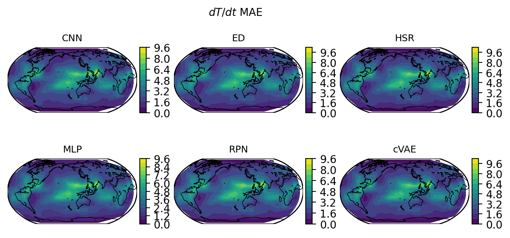
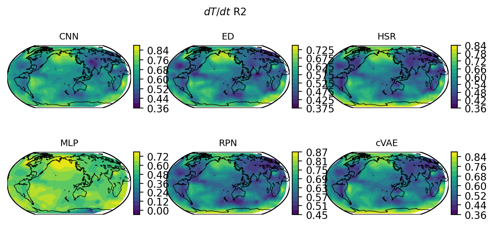
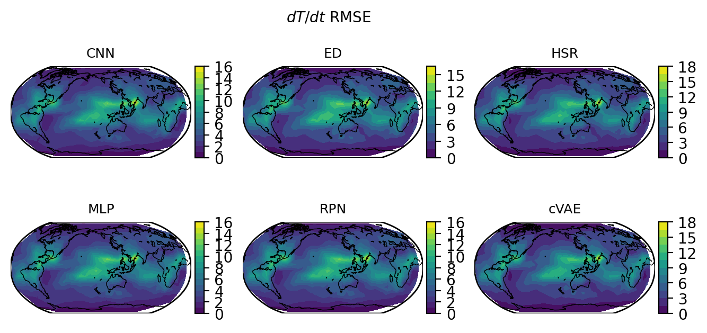
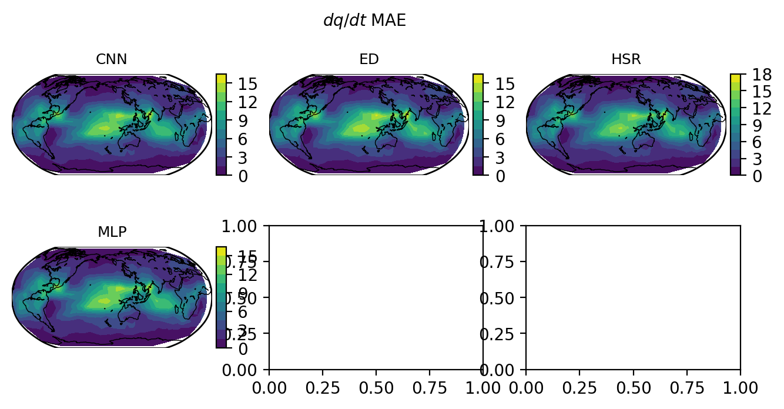

import warnings
import numpy as np
import xarray as xr
import matplotlib.pyplot as plt
from mpl_toolkits.basemap import Basemap
warnings.filterwarnings('ignore')
%config InlineBackend.figure_format = 'retina'
file = '~/Downloads/ClimSim_low-res_grid-info.nc'
grid = xr.open_dataset(file,engine='netcdf4')
x = grid.lon
y = grid.lat
def load(model,metricval):
file = '~/Downloads/metrics_netcdf/'+model+'_'+metricval+'.nc'
data = xr.open_dataset(file,engine='netcdf4')
return data
models = ['CNN','ED','HSR','MLP','RPN','cVAE']
metrics = ['MAE','R2','RMSE']
vardict = {'$dT/dt$':'ptend_t',
'$dq/dt$':'ptend_q0001',
'NETSW':'cam_out_NETSW',
'FLWDS':'cam_out_FLWDS',
'PRECSC':'cam_out_PRECSC',
'PRECC':'cam_out_PRECC',
'SOLS':'cam_out_SOLS',
'SOLL':'cam_out_SOLL',
'SOLSD':'cam_out_SOLSD',
'SOLLD':'cam_out_SOLLD'}
for var,varname in vardict.items():
for metric in metrics:
for model in models:
data = load(model,metric)[varname]
if 'lev' in data.dims:
data = data.mean(dim='lev')
if model == 'R2':
data = data.where(x<0,0)
print(f'{var} {metric} {model}... Min: {data.min().values}, Max: {data.max().values}')
for var,varname in vardict.items():
for metric in metrics:
fig,axs = plt.subplots(ncols=3,nrows=2,figsize=(8,3.5))
fig.suptitle(f'{var} {metric}',fontsize=10)
# cax = fig.add_axes([0.95,0.1,0.02,0.7])
for ax,model in zip(axs.flat,models):
m = Basemap(projection='robin',lon_0=165,resolution='c',ax=ax)
m.drawcoastlines(linewidth=0.5)
x,y = m(grid.lon,grid.lat)
ax.set_title(model,fontsize=9)
data = load(model,metric)[varname]
if 'lev' in data.dims:
data = data.mean(dim='lev')
if model == 'R2':
data = data.where(x<0,0)
plot = ax.tricontourf(x,y,data,cmap='viridis',levels=14,vmin=0.,vmax=1.)
cb = m.colorbar(plot,ax=ax)
# cb = plt.colorbar(plot,cax=cax)
# plt.tight_layout(rect=[0.05,0.025,0.95,0.975])
plt.show()




{kind=link}
{kind=link}
{kind=link}
---------------------------------------------------------------------------
KeyboardInterrupt Traceback (most recent call last)
Cell In[21], line 8
5 # cax = fig.add_axes([0.95,0.1,0.02,0.7])
7 for ax,model in zip(axs.flat,models):
----> 8 m = Basemap(projection='robin',lon_0=165,resolution='c',ax=ax)
9 m.drawcoastlines(linewidth=0.5)
10 x,y = m(grid.lon,grid.lat)
File ~/Documents/Python/Miniconda/envs/test/lib/python3.9/site-packages/mpl_toolkits/basemap/__init__.py:1133, in Basemap.__init__(self, llcrnrlon, llcrnrlat, urcrnrlon, urcrnrlat, llcrnrx, llcrnry, urcrnrx, urcrnry, width, height, projection, resolution, area_thresh, rsphere, ellps, lat_ts, lat_1, lat_2, lat_0, lon_0, lon_1, lon_2, o_lon_p, o_lat_p, k_0, no_rot, suppress_ticks, satellite_height, boundinglat, fix_aspect, anchor, celestial, round, epsg, ax)
1130 self.coastpolygons.append((x,y))
1131 # replace coastsegs with line segments (instead of polygons)
1132 self.coastsegs, types =\
-> 1133 self._readboundarydata('gshhs',as_polygons=False)
1134 self.coastsegs = [sg for sg in self.coastsegs if len(sg) > 0]
1135 # create geos Polygon structures for land areas.
1136 # currently only used in is_land method.
File ~/Documents/Python/Miniconda/envs/test/lib/python3.9/site-packages/mpl_toolkits/basemap/__init__.py:1400, in Basemap._readboundarydata(self, name, as_polygons)
1397 if not poly.is_valid(): poly=poly.fix()
1398 # if polygon instersects map projection
1399 # region, process it.
-> 1400 if poly.intersects(boundarypolyll):
1401 if name != 'gshhs' or as_polygons:
1402 geoms = poly.intersection(boundarypolyll)
KeyboardInterrupt:
{kind=link}